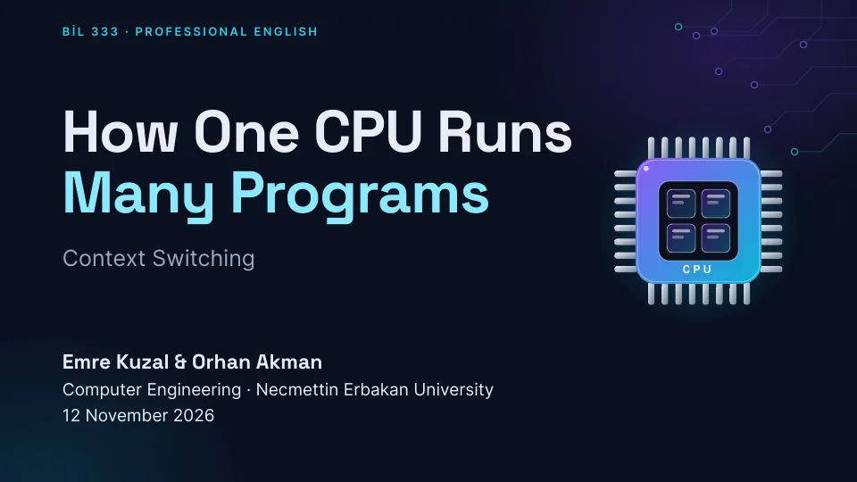
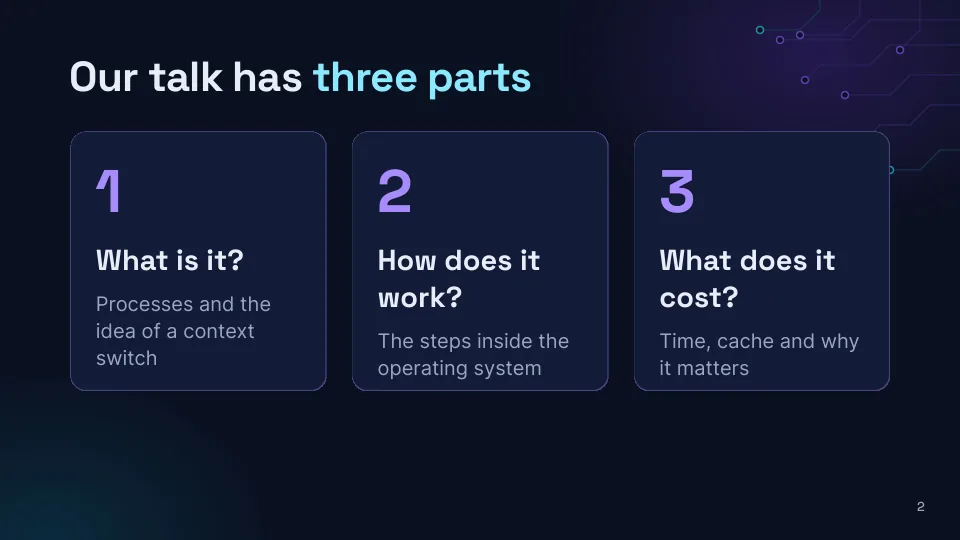

Vocational English · Presentation
How One CPU Runs Many Programs: Context Switching
About this talk
When you use your computer, you can listen to music, browse the web and write code at the same time. But a CPU core can only run one instruction stream at a time. So how does it look like everything is running together? The answer is context switching: the operating system quickly stops one program, saves where it was, and starts another one. This happens so fast (thousands of times per second) that we do not notice it.
A context switch is the process of saving the state of the currently running process and loading the saved state of another process, so the CPU can continue running it later from exactly the same point.
What is a "context"?
The context is everything the CPU needs to continue a program later. The operating system stores it in a data structure called the Process Control Block (PCB):
- Program Counter (PC): the address of the next instruction to run
- CPU registers: the values the program is working with right now
- Stack pointer: where the program's stack is in memory
- Process state: running, ready, waiting, etc.
- Memory management information: page tables, memory limits
- Open files and I/O status
How does a context switch happen?
- Process A is running on the CPU.
- An interrupt or system call happens, and control goes to the operating system.
- The OS saves the state of Process A into its PCB.
- The scheduler chooses the next process to run (Process B).
- The OS loads the saved state of Process B from its PCB.
- Process B continues from exactly where it stopped before.
When does it happen?
- Timer interrupt: the process used its time slice, so it is another process's turn (preemptive multitasking).
- Waiting for I/O: the process waits for the disk, network or keyboard, so the CPU runs something else meanwhile.
- A higher-priority process becomes ready.
- The process finishes or voluntarily gives up the CPU.
The cost of a context switch
Context switching is necessary, but it is not free. During a switch, the CPU does no useful work for the user's programs. This is called overhead. Besides saving and loading registers, the new process often finds the CPU caches and the TLB filled with the old process's data, so it runs slower for a short time. If the time slice is too short, the system spends too much time switching. If it is too long, the system feels slow and unresponsive. Operating system designers must find a balance.
Process switch vs. thread switch
| Process switch | Thread switch (same process) | |
|---|---|---|
| Registers & PC | Saved and loaded | Saved and loaded |
| Memory address space | Changes | Stays the same |
| Cost | Higher | Lower |
A simple analogy
Imagine a chef cooking three dishes in one small kitchen. Before moving from the soup to the pasta, the chef writes a note: "Soup: added salt, boil 5 more minutes." Later, the chef reads the note and continues the soup from the same point. The note is the PCB, and moving between dishes is a context switch. Writing and reading notes takes time, and that is the overhead.
Slides

▶ Animated
PDFSources
- PaperOusterhout, J. (1990). Why Aren't Operating Systems Getting Faster As Fast as Hardware? USENIX Summer Conference.
- PaperLi, C., Ding, C. & Shen, K. (2007). Quantifying the Cost of Context Switch. ACM Workshop on Experimental Computer Science (ExpCS).
- BookArpaci-Dusseau, R. & Arpaci-Dusseau, A. Operating Systems: Three Easy Pieces, Chapter 6: Limited Direct Execution.
- BookSilberschatz, A., Galvin, P. B. & Gagne, G. Operating System Concepts, 10th ed., Wiley. Chapter 3: Processes.
- Tech docMicrosoft Learn. Context Switches.
- Tech docLinux Kernel Documentation. CFS Scheduler & EEVDF Scheduler.
- Tech docLinux man-pages. vmstat(8) & proc_pid_status(5).
- Tech docMicrosoft Learn. Win32_PerfFormattedData classes.
- BlogBendersky, E. (2018). Measuring context switching and memory overheads for Linux threads.